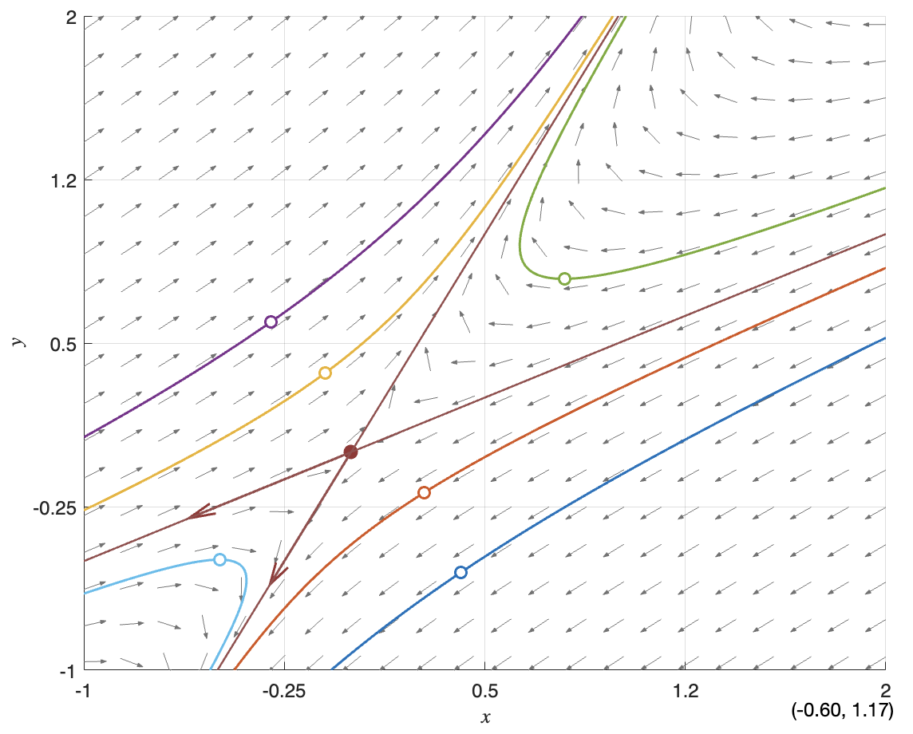
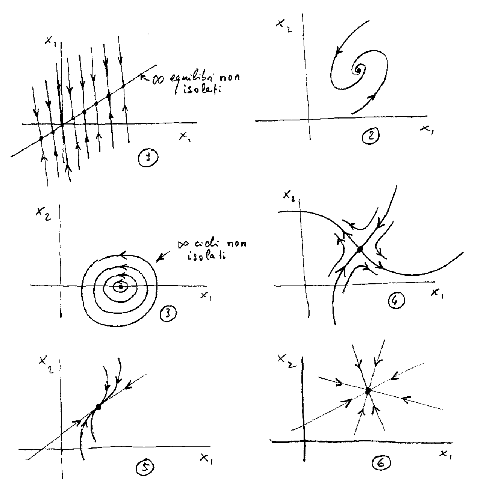
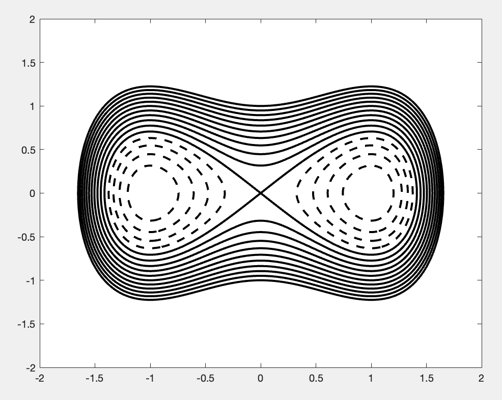
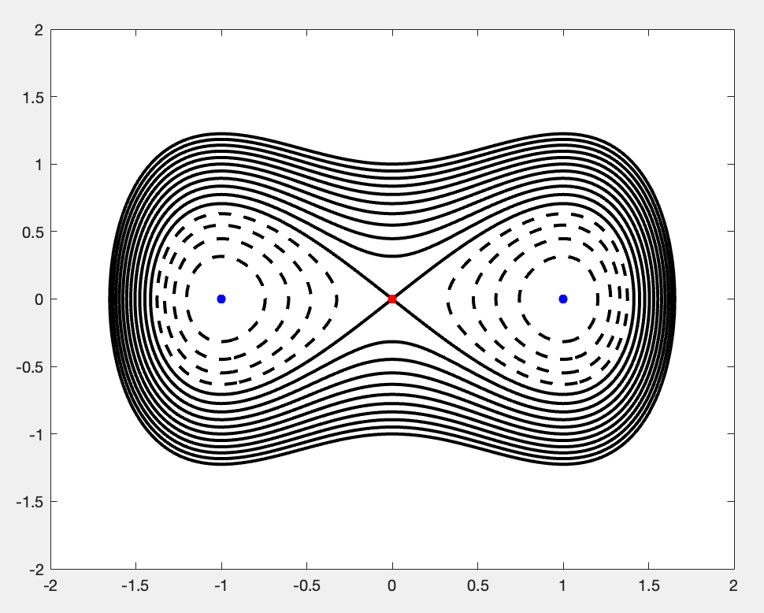
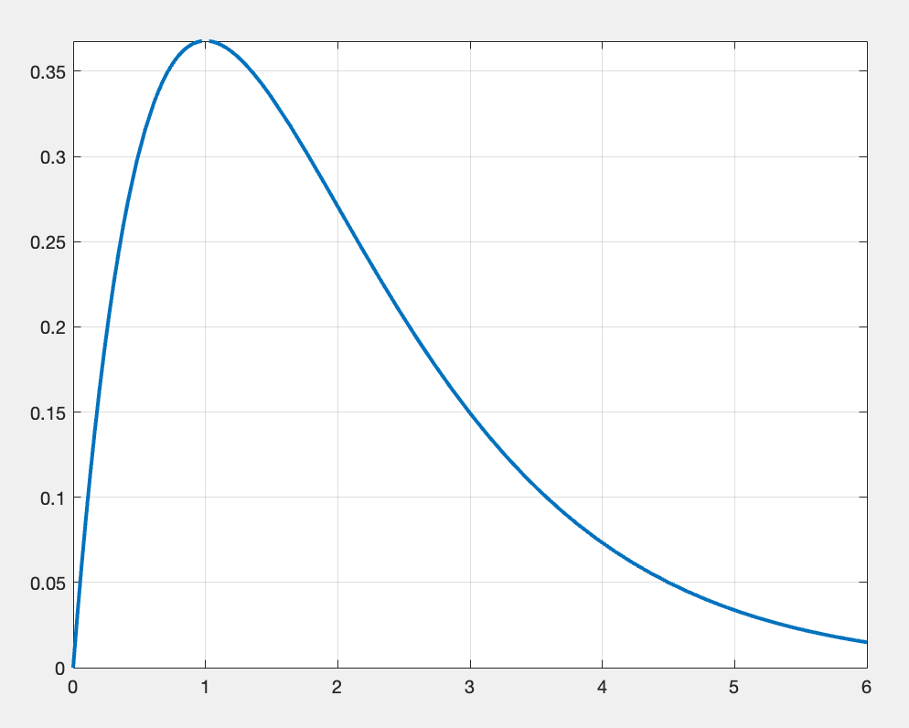
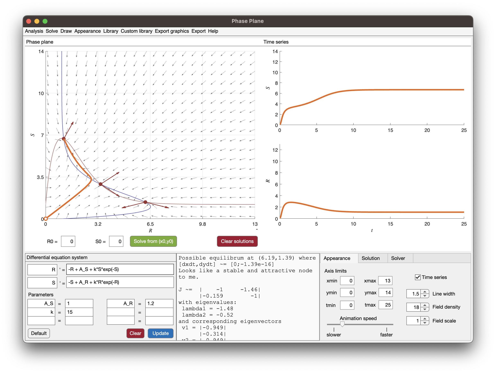

System of ODEs
Assignment 4
Linear dynamics
Consider the linear system \(\mathbf{v}' = \mathbf{A}\mathbf{v}\) where \[ \mathbf{A} = \begin{pmatrix} -3 & 2 \\ -2 & 2 \end{pmatrix}. \]
- Find the eigenvalues and eigenvectors of \(\mathbf{A}\).
We need to find \(\lambda\) and \(\mathbf{v}\) such that \(\mathbf{A}\mathbf{v} = \lambda\mathbf{v}\). First, the eigenvalues roots of \[ \det(\mathbf{A}-\lambda\mathbf{I}) = (-3-\lambda)(2-\lambda)+4 = \lambda^2 + \lambda - 2. \]
Also note that \(\det(\mathbf{A}-\lambda\mathbf{I}) = \lambda^2 - \operatorname{tr}\mathbf{A}\lambda + \det\mathbf{A}\). The eigenvalues are: \[ \lambda_1 = -2, \quad \lambda_2 = 1. \]
For the eigenvectors we have: \[ \begin{aligned} \mathbf{A}\mathbf{v}_1 &= \lambda_1\mathbf{v}_1 = -2 \mathbf{v}_1, \\ \mathbf{A}\mathbf{v}_2 &= \lambda_2\mathbf{v}_2 = 1 \mathbf{v}_2. \end{aligned} \]
We see that a possible choice of eigenvectors is \[ \mathbf{v}_1 = \begin{bmatrix} 2 \\ 1 \end{bmatrix}, \quad \mathbf{v}_2 = \begin{bmatrix} 1 \\ 2 \end{bmatrix}. \]
- Compute the matrix exponential of \(t\mathbf{A}\) and the transition matrix.
The matrix \(\mathbf{A}\) is diagonalizable. Thus, the matrix exponential is: \[ e^{t\mathbf{A}} = \mathbf{V}e^{t\Lambda}\mathbf{V}^{-1} \]
where \(\Lambda = \operatorname{diag}\{\lambda_1, \lambda_2 \}\). The matrix \(\mathbf{V}\) and its inverse are: \[ \mathbf{V} = \begin{bmatrix} \mathbf{v}_1 \;|\; \mathbf{v}_2 \end{bmatrix} = \begin{bmatrix} 2 & 1 \\ 1 & 2 \end{bmatrix}, \quad \mathbf{V}^{-1} = \frac{1}{3} \begin{bmatrix} 2 & -1 \\ -1 & 2 \end{bmatrix}. \]
So we get: \[ \begin{split} e^{t\mathbf{A}} &= \begin{bmatrix} 2 & 1 \\ 1 & 2 \end{bmatrix} \begin{bmatrix} e^{-2t} & 0 \\ 0 & e^t \end{bmatrix} \frac{1}{3} \begin{bmatrix} 2 & -1 \\ -1 & 2 \end{bmatrix} \\ &= \frac{1}{3} \begin{bmatrix} 4 e^{-2t} - e^t & 2( e^t - e^{-2t}) \\ 2( e^{-2t} - e^t) & 4 e^t - e^{-2t} \end{bmatrix}. \end{split} \]
The transition matrix is just \(\mathbf{W}(t,s) = e^{(t-s)\mathbf{A}}\).
- How can we approximate the behaviour of solutions for different initial conditions?
Since we have the transition matrix, the solution for \(\mathbf{y}(0)=\mathbf{y}_0\) is: \[ \mathbf{y}(t) = \mathbf{W}(t,0)\mathbf{y}_0 = e^{t\mathbf{A}}\mathbf{y}_0. \]
- Find the equilibrium of the ODE and compute the stable and unstable manifold. Draw them on the phase portrait. Note, by definition the stable and unstable manifolds are \[ \begin{aligned} \mathcal{W}^s(\mathbf{y}^*) &= \bigl\{ \mathbf{y}_0\in\mathbb{R}^2\colon \lim_{t\to+\infty}\boldsymbol{\phi}(t,\mathbf{y}_0) = \mathbf{y}^* \bigr\}, \\ \mathcal{W}^u(\mathbf{y}^*) &= \bigl\{ \mathbf{y}_0\in\mathbb{R}^2\colon \lim_{t\to-\infty}\boldsymbol{\phi}(t,\mathbf{y}_0) = \mathbf{y}^* \bigr\}. \end{aligned} \]
For this ODE we know the flow \(\boldsymbol{\phi}(t,\mathbf{y}_0)\) explicitly: \[ \boldsymbol{\phi}(t,\mathbf{y}_0) = e^{t\mathbf{A}}\mathbf{y}_0 = \mathbf{V}e^{t\Lambda}\mathbf{V}^{-1}\mathbf{y}_0. \]
Thus the limit is: \[ \lim_{t\to\pm\infty} \boldsymbol{\phi}(t,\mathbf{y}_0) = \mathbf{V} \Bigl( \lim_{t\to\pm\infty} e^{t\Lambda}\Bigr) \mathbf{V}^{-1}\mathbf{y}_0. \]
The limit between parenthesis is a diagonal matrix formally equal to: \[ \begin{aligned} \lim_{t\to+\infty} e^{t\Lambda} &= \operatorname{diag}\{ 0, +\infty \}, \\ \lim_{t\to-\infty} e^{t\Lambda} &= \operatorname{diag}\{ +\infty, 0 \}. \end{aligned} \]
For the stable manifold \(\mathcal{W}^s\), the limit is \(\mathbf{y}^* = \mathbf{0}\) only if \[ \mathbf{V}^{-1}\mathbf{y}_0 = \begin{bmatrix} \alpha \\ 0 \end{bmatrix} \quad\Rightarrow\quad \mathbf{y}_0 = \alpha \mathbf{v}_1, \]
for some \(\alpha\in\mathbb{R}\), otherwise the second component of \(\mathbf{V}^{-1}\mathbf{y}_0\) diverges. Similarly for the unstable manifold, we get that \(\mathbf{y}_0 = \alpha \mathbf{v}_2\). In conclusion, the manifolds are the linear spaces: \[ \begin{aligned} \mathcal{W}^s(\mathbf{y}^*) &= \bigl\{ \alpha \mathbf{v}_1 \colon \alpha\in\mathbb{R} \bigr\}, \\ \mathcal{W}^u(\mathbf{y}^*) &= \bigl\{ \alpha \mathbf{v}_2 \colon \alpha\in\mathbb{R} \bigr\}. \end{aligned} \]
In other words, the stable manifold is the line parallel to the first eigenvector and passing through the origin, whereas the unstable manifold is the one parallel to the second eigenvector.
- Qualitatively describe or draw the orbits.
Since we know the stable and unstable manifolds, we know already 2 orbits. Specifically, one orbit is along \(\mathcal{W}^s\) with dynamic \(e^{\lambda_1 t} = e^{-2t}\), thus any non-zero point on \(\mathcal{W}^s\) converges to zero with the above rate. Similarly, on the unstable manifold trajectories diverges with rate \(e^{\lambda_2 t} = e^t\).
For other initial conditions, the dynamic is a linear combination of the dynamic on the stable and unstable manifold. See the picture.

Q3.6. Is the equilibrium \(\mathbf{y}^* = \mathbf{0}\) stable?
The equilibrium is unstable, specifically a saddle point.
Phase portraits
Take a look at the following set of phase portraits:

- Find the phase portrait that cannot be from a linear ODE.
Case 4 cannot be from a linear system, because for a saddle the stable and unstable manifold should be linear.
- For all the others, qualitatively describe the set of eigenvectors, eigenvalues, equilibria, and stability.
Let us go case by case:
Here we have \(\lambda_1 < 0\) (real), and \(\lambda_2 = 0\). The first eigenvector \(\mathbf{v}_1\) is almost vertical, whereas \(\mathbf{v}_2\) is parallel to the line with equilibria. The kernel of \(\mathbf{A}\) is generated by \(\mathbf{v}_2\). For instance, we could take \(\mathbf{v}_1 = [0,1]^T\) and \(\mathbf{v}_2 = [1,1]^T\).
This is an asymptotically stable spiral. Thus, we have 2 complex conjugate eigenvalues, \(\lambda\) and \(\bar{\lambda}\), with negative real part.
A center, as above but the real part is zero: \(\lambda_{1,2} = \pm i \omega\) for some \(\omega\). An example is \(\mathbf{A} = \left(\begin{smallmatrix} 0 & 01 \\ \omega^2 & 0 \end{smallmatrix}\right)\).
Non linear.
Tricky one. We only have one eigenvector \(\mathbf{v}_1\) associated with an asymptotically stable eigenvalue (real). The eigenvalue is double, that is the algebraic multiplicity is 2 (double root of the characteristic polynomial), but the geometrical multiplicity is 1. Recall that the geometrical multiplicity is the dimension of the eigenspace \(\ker(\lambda\mathbf{I} - \mathbf{A})\). Along \(\mathbf{v}_1\) we approach the equilibrium as usual. Components orthogonal to \(\mathbf{v}_1\) will also converge to the equilibrium as \(t e^{\lambda t}\). Take \(\mathbf{A}=\left(\begin{smallmatrix} a & 1 \\ 0 & a \end{smallmatrix}\right)\) with \(a<0\) as an example.
Asymptotically stable equilibrium with two coincident eigenvalues, e.g., \(\mathbf{A} = \lambda \mathbf{I}\) for some \(\lambda < 0\) real.
Double-well potential
Consider the following ODE \[ y'' = F(y) = y - y^3. \]
- Recast the problem as a system of ODEs.
We set \(y_1 = y\) and \(y_2 = y' = y_1'\), so: \[ \left\{\begin{aligned} y_1' &= y_2, \\ y_2' &= y_1 - y_1^3 = F(y_1). \end{aligned}\right. \]
- Find the Hamiltonian of the system. Hint: use the potential energy.
Since \(U(y_1) = -\frac{1}{2} y_1^2 + \frac{1}{4} y_1^4\) is such that \(U' = -F\), we have the Hamiltonian: \[ H(y_1,y_2) = \frac{1}{2} y_2^2 + U(y_1). \]
- Graphically represent the orbits in the phase plane for various choices of the initial energy. Are all orbits closed?
Yes, orbits are all closed, because \(H\) is bounded from below and \(H\to+\infty\) as \(\|\mathbf{y}\|\to\infty\). So, \(H(y_1,y_2)=k\) is always a closed curve if \(k > \min_{\mathbf{y}} H\). Graphically:

- Show that the system has 3 equilibria, two stable (not asymptotically) and one unstable.
We can compute them by looking at stationary points of the Hamiltonian. We have 2 equilibria at \((\pm1,0)\), which are locally stable because the Hamiltonian is convex, and one saddle point at \((0,0)\). Note that linearization fails for this example, we can only deduce the stability from the phase portrait.

- The system has 2 homoclinic orbits, one on the left and one on the right of the origin. Homoclinic orbits look like periodic orbits, but with an infinite period. Try to describe what happens if you start close to the origin, and then you take the initial condition that tends to the origin. What does it happen to the solution?
If we start close to the origin, we are on a periodic solution with some period \(T>0\). The orbit has a shape close to the homoclinic orbit. If we start closer and closer, the orbit will tend to a drop-like shape (like the homoclinic) and the period will tend to \(\infty\).
Gone with the Wind
Based on exercise 7.2.19 from Strogatz (2015).
Rinaldi et al. (2013) used mathematical modeling to describe the stormy love affair between Scarlett O’Hara and Rhett Butler. The system reads: \[ \left\{\begin{aligned} R' &= -R + A_S + kS e^{-S}, \\ S' &= -S + A_R + kR e^{-R}, \end{aligned}\right. \]
where \(R(t)\) is Rhett’s love for Scarlett, and \(S(t)\) is Scarlett’s love for Rhett. All parameters are positive.
Note: “Frankly, my dear, I don’t give a damn” is not a valid answer.
- Interpret the three terms on the right hand side of each equation. What do they mean, romantically speaking? In particular, what does the functional form of the exponentials terms signify about how Rhett and Scarlett react to each other’s endearments?
Let us exclude for a moment the exponental terms. In this case, the equations are independent, with \(R\to A_S\) and \(S\to A_R\) at \(t\to\infty\). Thus, we can interpret \(A_S\) as the asymptotic love of Rhett for Scarlett, in the absence of a feedback from Scarlett. The same is valid for Scarlett’s love for Rhett.
The exponential terms models the interaction between the two lovers. The function \(S e^{-S}\) is as follows:

So, when \(S=0\) (Scarlett has no interest for Rhett), this term is also zero, providing no contribution to Rhett’s love. But as soon as \(S\) increases, Rhett’s love increases even more. The peak is for \(S=1\), after that too much love from Scarlett (\(S\gg 1\)) has little effect in Rhett’s love. The situation is simmetric for Scarlett reaction to Rhett’s love.
- Show that all trajectories that begin in the first quadrant \(R, S > 0\) stay in the first quadrant forever, and interpret that result psychologically.
The system is not in Kolmogorov form, but we can check whether the first quadrant is a trapping region. For \(S=0\), we have \(S' = A_R + kR e^{-R} > 0\), so orbits can only enter. Similarly, for \(R=0\), we have \(R' = A_S + kS e^{-S} > 0\). Thus, the axes of the first quadrant are inflow, thus if we start in the first quadrant, we cannot leave.
Psychologically, we could say that once they meet, they cannot avoid love between them. But I’m open to other interpretations.
- Using Dulac’s criterion, prove that the model has no periodic solutions. Hint: the simplest \(h(R,S)\) you can think of will work.
Let us consider \(h\equiv 1\). We have: \[ \nabla\cdot\mathbf{f} = -2 < 0. \]
The sign is constant, thus we cannot have limit cycles.
- Using Phase Plane in Matlab, plot the phase portrait for the system, assuming parameter values \(A_S = 1.2\), \(A_R = 1\), and \(k=15\). Assuming that Rhett and Scarlett are indifferent when they meet, so that \(R(0)=S(0)=0\), plot the predicted trajectory for what happens in the first stage of their relationship. Hint: don’t use the default range for the phase plane, increase it. If you spot a heart ❤️, it’s not on purpose.

We have 3 equilibria, one saddle at the center and 2 stable and attractive equilibria. The unstable manifold of the saddle connects to the stable manifold of the equilibria, effectively providing a barrier in the lower left triangle of the phase plane. The stable manifold of the saddle roughly bisect the triangle.
Starting from \((0,0)\), we intially approach the saddle, thus the \(S\) and \(R\) are comparable (Scarlett loves Rhett as much as Rhett loves Scarlett), but then the orbit turns to the right, and reaches an equilibrium where Rhett’s love for Scarlett is much higher than Scarlett’s love for Rhett’s.